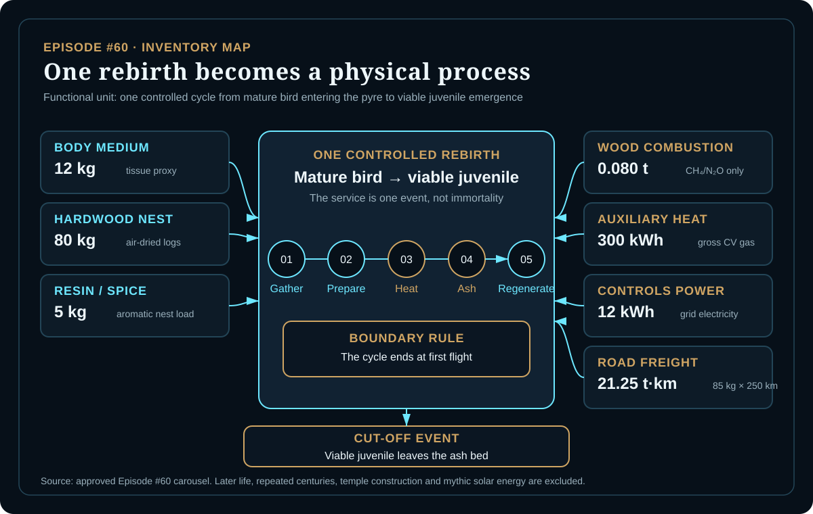
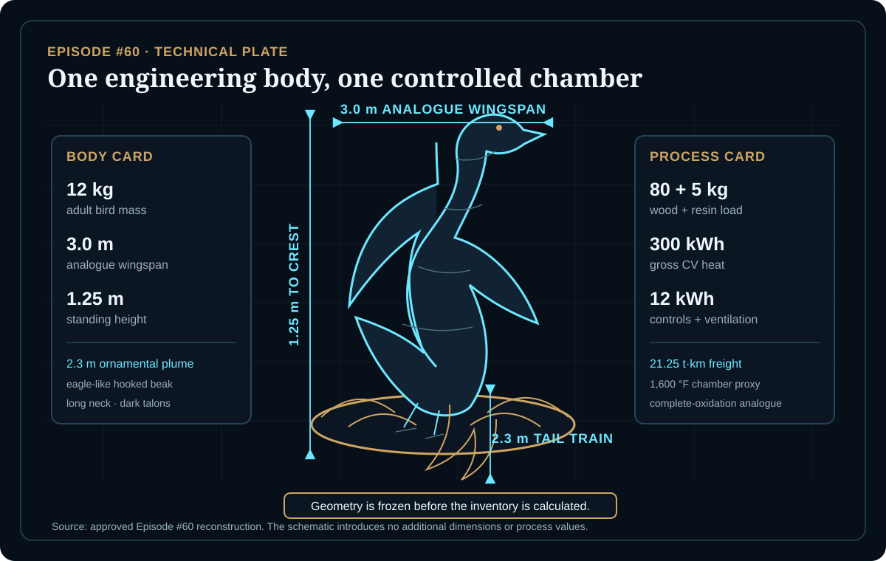
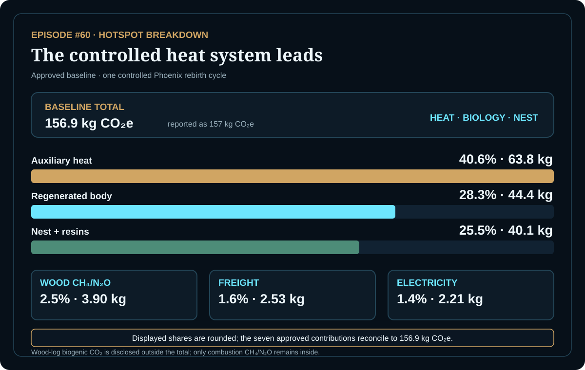

EPISODE #60 · MYTHS & LEGENDS
The Phoenix
What is the climate footprint of one Phoenix rebirth when the myth is reconstructed as a controlled material and energy system?
THE SUBJECT
A deathless bird becomes one finite regeneration event.
The approved episode freezes the Phoenix as a 12 kg adult bird with an eagle-like hooked beak, a long heron neck, gold and emerald feathers, dark talons and a flame-shaped tail. Its reconstructed pyre uses 80 kg of air-dried hardwood and 5 kg of aromatic resin/spice proxy, supported by controlled heat, electricity and material freight.
The service is not immortality. The boundary begins when the mature bird enters the pyre and ends when a viable juvenile leaves the ash bed. Temple or retort construction, mythic solar energy, lifetime amortization and any avoided-death or immortality credit remain outside the model.
Engineering body
12 kg adult bird; 3.0 m analogue wingspan; 1.25 m standing height; 2.3 m tail train.
Rebirth system
80 kg hardwood nest, 5 kg resin/spice load, 300 kWh auxiliary heat and 12 kWh controls.
Main hotspot
Auxiliary heat contributes 63.8 kg CO₂e, or 40.6% of the baseline.
Proxy rule
Food and drink represents biological matter; biogenic wood CO₂ is disclosed outside the total.
VISUAL MODEL
The myth becomes a controlled process
The inventory map follows one rebirth from material gathering to viable juvenile emergence; the technical plate records only the geometry and process parameters fixed in the approved episode.


DETAILED LIFE CYCLE INVENTORY
The locked rebirth inventory
The seven approved contributions sum to 156.9 kg CO₂e and support the rounded headline of 157 kg CO₂e. Wood-log biogenic CO₂ remains a separate, unquantified disclosure because the approved episode reports it outside the total.
| Stage | Component / activity | Activity data | Climate change | Modelling basis |
|---|---|---|---|---|
| Regeneration | Body medium | 12 kg | 44.4 kg CO₂e | DEFRA 2026 food-and-drink material proxy: 3.701 kg CO₂e/kg, used for regenerated biological matter. |
| Nest materials | Air-dried hardwood logs | 80 kg | 21.6 kg CO₂e | DEFRA 2026 wood material factor: 0.2695 kg CO₂e/kg. |
| Nest materials | Aromatic resin/spice proxy | 5 kg | 18.5 kg CO₂e | Same conservative food-and-drink material proxy: 3.701 kg CO₂e/kg. |
| Combustion | Wood combustion CH₄/N₂O | 0.080 t | 3.90 kg CO₂e | DEFRA 2026 bioenergy factor: 48.738 kg CO₂e/t. Wood-log CO₂ is reported outside the total. |
| Process energy | Auxiliary heat | 300 kWh gross CV gas | 63.8 kg CO₂e | DEFRA 2026 natural-gas direct factor of 0.1823 plus WTT factor of 0.03021 kg CO₂e/kWh. |
| Controls | Electricity for controls and ventilation | 12 kWh | 2.21 kg CO₂e | DEFRA 2026 UK electricity total: 0.18436 kg CO₂e/kWh. |
| Logistics | Road freight for nest materials | 21.25 t·km | 2.53 kg CO₂e | 0.085 t × 250 km; DEFRA 2026 road-freight total: 0.11922 kg CO₂e/t·km. |
| Approved baseline total | 156.9 kg CO₂e | Reported as 157 kg CO₂e per controlled rebirth cycle. | ||
Included
Regenerated body medium, hardwood nest, aromatic resin proxy, auxiliary heat and controls, wood-combustion CH₄/N₂O and road freight for nest materials.
Excluded
Temple or retort construction, mythic solar energy, lifetime amortization and avoided-death or immortality credit.
Cut-off event
The cycle stops when the new Phoenix leaves the ash bed as a viable juvenile. Later life, flight and centuries of existence are outside the model.
Temperature proxy
A 1,600 °F secondary-chamber proxy is used only as an engineering analogue for complete oxidation control, not as a claim about the mythical process.
HOTSPOT
The controlled heat system leads
Auxiliary heat contributes 63.8 kg CO₂e. Regenerated body medium contributes 44.4 kg and the hardwood-resin nest contributes 40.1 kg; combustion, electricity and freight are minor.

Main result
157 kg CO₂e
Per controlled Phoenix rebirth cycle.
Auxiliary heat
63.8 kg CO₂e · 40.6%
The first baseline hotspot.
Regenerated body
44.4 kg CO₂e · 28.3%
Through the biological material proxy.
Nest + resins
40.1 kg CO₂e · 25.5%
Hardwood and aromatic load combined.
Body-mass sensitivity
8 kg body → 142.1 kg CO₂e
12 kg baseline → 156.9 kg CO₂e
18 kg body → 179.1 kg CO₂e
Only regenerated body mass changes; nest, heat, electricity and freight remain fixed.
Body-mass interpretation
A heavier Phoenix mainly adds biological-proxy emissions. The reported range spans a large flying-bird analogue to an upper mythical build.
Heat-factor sensitivity
Electric heat proxy → 148.4 kg CO₂e
Natural gas baseline → 156.9 kg CO₂e
Propane proxy → 164.9 kg CO₂e
Energy demand remains fixed at 300 kWh; only the heat emission factor changes.
Heat interpretation
Changing heat carbon intensity shifts the result by about ±8 kg. The baseline story remains stable: controlled heat is the largest single contribution.
Biogenic disclosure
Wood-log CO₂ is reported outside the baseline total. Wood-combustion CH₄/N₂O remains inside at 3.90 kg CO₂e.
Boundary interpretation
The event ends at viable juvenile emergence, not at mythic immortality. Later life and repeated centuries are not silently added to one rebirth.
THE VERDICT
Rebirth has a boundary.
Heat is the hotspot.
Biology is a proxy.
Biogenic CO₂ is disclosed.
Even resurrection needs a material ledger.